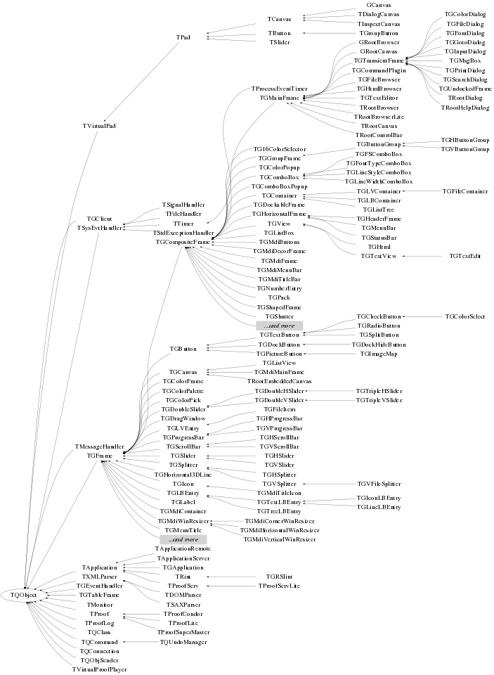

class TQObject
This is the ROOT implementation of the Qt object communication mechanism (see also http://www.troll.no/qt/metaobjects.html) Signals and slots are used for communication between objects. When an object has changed in some way that might be interesting for the outside world, it emits a signal to tell whoever is listening. All slots that are connected to this signal will be activated (called). It is even possible to connect a signal directly to another signal (this will emit the second signal immediately whenever the first is emitted.) There is no limitation on the number of slots that can be connected to a signal. The slots will be activated in the order they were connected to the signal. This mechanism allows objects to be easily reused, because the object that emits a signal does not need to know to which objects the signals are connected. Together, signals and slots make up a powerfull component programming mechanism. This implementation is provided by Valeriy Onuchin (onuchin@sirius.ihep.su).
Function Members (Methods)
public:
| TQObject() | |
| virtual | ~TQObject() |
| static Bool_t | AreAllSignalsBlocked() |
| Bool_t | AreSignalsBlocked() const |
| static Bool_t | BlockAllSignals(Bool_t b) |
| Bool_t | BlockSignals(Bool_t b) |
| virtual void | ChangedBy(const char* method)SIGNAL |
| static TClass* | Class() |
| void | CollectClassSignalLists(TList& list, TClass* cls) |
| Bool_t | Connect(const char* signal, const char* receiver_class, void* receiver, const char* slot) |
| static Bool_t | Connect(TQObject* sender, const char* signal, const char* receiver_class, void* receiver, const char* slot) |
| static Bool_t | Connect(const char* sender_class, const char* signal, const char* receiver_class, void* receiver, const char* slot) |
| virtual void | Connected(const char*) |
| virtual void | Destroyed()SIGNAL |
| Bool_t | Disconnect(const char* signal = 0, void* receiver = 0, const char* slot = 0) |
| static Bool_t | Disconnect(TQObject* sender, const char* signal = 0, void* receiver = 0, const char* slot = 0) |
| static Bool_t | Disconnect(const char* class_name, const char* signal, void* receiver = 0, const char* slot = 0) |
| virtual void | Disconnected(const char*) |
| void | Emit(const char* signal) |
| void | Emit(const char* signal, Long_t* paramArr) |
| void | Emit(const char* signal, const char* params) |
| void | Emit(const char* signal, Double_t param) |
| void | Emit(const char* signal, Long_t param) |
| void | Emit(const char* signal, Long64_t param) |
| void | Emit(const char* signal, Bool_t param) |
| void | Emit(const char* signal, Char_t param) |
| void | Emit(const char* signal, UChar_t param) |
| void | Emit(const char* signal, Short_t param) |
| void | Emit(const char* signal, UShort_t param) |
| void | Emit(const char* signal, Int_t param) |
| void | Emit(const char* signal, UInt_t param) |
| void | Emit(const char* signal, ULong_t param) |
| void | Emit(const char* signal, ULong64_t param) |
| void | Emit(const char* signal, Float_t param) |
| void | EmitVA(const char* signal, Int_t nargs) |
| void | EmitVA(const char* signal, Int_t nargs, va_list va) |
| TList* | GetListOfClassSignals() const |
| TList* | GetListOfConnections() const |
| TList* | GetListOfSignals() const |
| virtual Bool_t | HasConnection(const char* signal_name) const |
| virtual void | HighPriority(const char* signal_name, const char* slot_name = 0) |
| virtual TClass* | IsA() const |
| static void | LoadRQ_OBJECT() |
| virtual void | LowPriority(const char* signal_name, const char* slot_name = 0) |
| virtual void | Message(const char* msg)SIGNAL |
| virtual Int_t | NumberOfConnections() const |
| virtual Int_t | NumberOfSignals() const |
| virtual void | ShowMembers(TMemberInspector&) |
| virtual void | Streamer(TBuffer&) |
| void | StreamerNVirtual(TBuffer& ClassDef_StreamerNVirtual_b) |
protected:
| static Int_t | CheckConnectArgs(TQObject* sender, TClass* sender_class, const char* signal, TClass* receiver_class, const char* slot) |
| static Bool_t | ConnectToClass(TQObject* sender, const char* signal, TClass* receiver_class, void* receiver, const char* slot) |
| static Bool_t | ConnectToClass(const char* sender_class, const char* signal, TClass* receiver_class, void* receiver, const char* slot) |
| virtual void* | GetSender() |
| virtual const char* | GetSenderClassName() const |
Class Charts



Function documentation
Int_t CheckConnectArgs(TQObject* sender, TClass* sender_class, const char* signal, TClass* receiver_class, const char* slot)
Checking of consitency of sender/receiver methods/arguments. Returns -1 on error, otherwise number or arguments of signal function. Static method.
TQObject()
TQObject Constructor. Comment: - In order to minimize memory allocation fListOfSignals and fListOfConnections are allocated only if it is neccesary - When fListOfSignals/fListOfConnections are empty they will be deleted
void CollectClassSignalLists(TList& list, TClass* cls)
Collect class signal lists from class cls and all its base-classes. The recursive traversal is not performed for classes not deriving from TQClass.
void HighPriority(const char* signal_name, const char* slot_name = 0)
1. If slot_name = 0 => makes signal defined by the signal_name
to be the first in the fListOfSignals, this decreases
the time for lookup.
2. If slot_name != 0 => makes slot defined by the slot_name
to be executed first when signal_name is emitted.
Signal name is not compressed.
void LowPriority(const char* signal_name, const char* slot_name = 0)
1. If slot_name = 0 => makes signal defined by the signal_name
to be the last in the fListOfSignals, this increase the time
for lookup.
2. If slot_name != 0 => makes slot defined by the slot_name
to be executed last when signal_name is emitted.
Signal name is not compressed.
Bool_t HasConnection(const char* signal_name) const
Return true if there is any object connected to this signal. Only checks for object signals.
Int_t NumberOfSignals() const
Return number of signals for this object. Only checks for object signals.
void EmitVA(const char* signal, Int_t nargs, va_list va)
Activate signal with variable argument list.
Example:
theButton->EmitVA("Clicked(int,float)", 2, id, fid)
void EmitVA(const char* signal, Int_t nargs, va_list va)
Activate signal with variable argument list. For internal use and for var arg EmitVA() in RQ_OBJECT.h.
void Emit(const char* signal, Long_t param)
Activate signal with single parameter.
Example:
theButton->Emit("Clicked(int)",id)
void Emit(const char* signal, Long64_t param)
Activate signal with single parameter.
Example:
theButton->Emit("Progress(Long64_t)",processed)
void Emit(const char* signal, Double_t param)
Activate signal with single parameter.
Example:
theButton->Emit("Scale(float)",factor)
void Emit(const char* signal, const char* params)
Activate signal with parameter text string.
Example:
myObject->Emit("Error(char*)","Fatal error");
void Emit(const char* signal, Long_t* paramArr)
Emit a signal with a varying number of arguments, paramArr is an array of the parameters. Note: any parameter should be converted to long type. Example: TQObject *processor; // data processor TH1F *hist; // filled with processor results processor->Connect("Evaluated(Float_t,Float_t)", "TH1F",hist,"Fill12(Axis_t,Axis_t)"); Long_t args[2]; args[0] = (Long_t)processor->GetValue(1); args[1] = (Long_t)processor->GetValue(2); processor->Emit("Evaluated(Float_t,Float_t)",args);
Bool_t ConnectToClass(TQObject* sender, const char* signal, TClass* receiver_class, void* receiver, const char* slot)
Create connection between sender and receiver. Receiver class needs to have a dictionary.
Bool_t ConnectToClass(const char* sender_class, const char* signal, TClass* receiver_class, void* receiver, const char* slot)
This method allows to make connection from any object of the same class to the receiver object. Receiver class needs to have a dictionary.
Bool_t Connect(TQObject* sender, const char* signal, const char* receiver_class, void* receiver, const char* slot)
Create connection between sender and receiver.
Signal and slot string must have a form:
"Draw(char*, Option_t* ,Int_t)"
All blanks and "const" words will be removed,
cl != 0 - class name, it can be class with or
without dictionary, e.g interpreted class.
Example:
TGButton *myButton;
TH2F *myHist;
TQObject::Connect(myButton,"Clicked()",
"TH2F", myHist,"Draw(Option_t*)");
cl == 0 - corresponds to function (interpereted or global)
the name of the function is defined by the slot string,
parameter receiver should be 0.
Example:
TGButton *myButton;
TH2F *myHist;
TQObject::Connect(myButton,"Clicked()",
0, 0,"hsimple()");
Warning:
If receiver is class not derived from TQObject and going to be
deleted, disconnect all connections to this receiver.
In case of class derived from TQObject it is done automatically.
Bool_t Connect(const char* sender_class, const char* signal, const char* receiver_class, void* receiver, const char* slot)
This method allows to make a connection from any object
of the same class to a single slot.
Signal and slot string must have a form:
"Draw(char*, Option_t* ,Int_t)"
All blanks and "const" words will be removed,
cl != 0 - class name, it can be class with or
without dictionary, e.g interpreted class.
Example:
TGButton *myButton;
TH2F *myHist;
TQObject::Connect("TGButton", "Clicked()",
"TH2F", myHist, "Draw(Option_t*)");
cl == 0 - corresponds to function (interpereted or global)
the name of the function is defined by the slot string,
parameter receiver should be 0.
Example:
TGButton *myButton;
TH2F *myHist;
TQObject::Connect("TGButton", "Clicked()",
0, 0, "hsimple()");
Warning:
If receiver class not derived from TQObject and going to be
deleted, disconnect all connections to this receiver.
In case of class derived from TQObject it is done automatically.
Bool_t Connect(const char* signal, const char* receiver_class, void* receiver, const char* slot)
Non-static method is used to connect from the signal of this object to the receiver slot. Warning! No check on consistency of sender/receiver classes/methods. This method makes possible to have connection/signals from interpreted class. See also RQ_OBJECT.h.
Bool_t Disconnect(TQObject* sender, const char* signal = 0, void* receiver = 0, const char* slot = 0)
Disconnects signal in object sender from slot_method in object receiver. For objects derived from TQObject signal-slot connection is removed when either of the objects involved are destroyed. Disconnect() is typically used in three ways, as the following examples shows: - Disconnect everything connected to an object's signals: Disconnect(myObject); - Disconnect everything connected to a signal: Disconnect(myObject, "mySignal()"); - Disconnect a specific receiver: Disconnect(myObject, 0, myReceiver, 0); 0 may be used as a wildcard in three of the four arguments, meaning "any signal", "any receiving object" or "any slot in the receiving object", respectively. The sender has no default and may never be 0 (you cannot disconnect signals from more than one object). If signal is 0, it disconnects receiver and slot_method from any signal. If not, only the specified signal is disconnected. If receiver is 0, it disconnects anything connected to signal. If not, slots in objects other than receiver are not disconnected If slot_method is 0, it disconnects anything that is connected to receiver. If not, only slots named slot_method will be disconnected, and all other slots are left alone. The slot_method must be 0 if receiver is left out, so you cannot disconnect a specifically-named slot on all objects.
Bool_t Disconnect(const char* class_name, const char* signal, void* receiver = 0, const char* slot = 0)
Disconnects "class signal". The class is defined by class_name. See also Connect(class_name,signal,receiver,slot).
Bool_t Disconnect(const char* signal = 0, void* receiver = 0, const char* slot = 0)
Disconnects signal of this object from slot of receiver. Equivalent to Disconnect(this, signal, receiver, slot)
void LoadRQ_OBJECT()
Load RQ_OBJECT.h which contains the #define RQ_OBJECT needed to let interpreted classes connect to signals of compiled classes.
void Emit(const char* signal)
void Emit(const char* signal, const char* params)